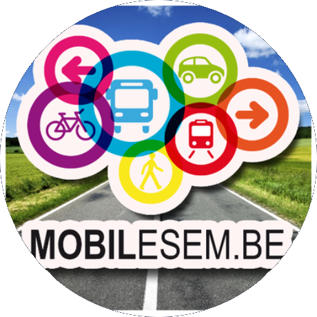

Assist ASBL
L’association a pour but, en dehors de tout esprit de lucre, de promouvoir dans le
Sud-Hainaut et le Sud-Namurois,
l’assistance médicale, paramédicale et ambulancière des personnes malades, hospitalisées, accidentées,
handicapées,
ainsi que le transport de tous produits liés à la profession médicale et paramédicale, et ce, par tous
les moyens tels
qu’ambulance, voiture, camionnette, etc.

Mobilesem
Créée en octobre 2011, l’asbl MOBILESEM est le résultat d’une succession d’actions face
aux constats des besoins criants de
mobilité des citoyens de l’Entre-Sambre-Et-Meuse. En effet, l’Entre-Sambre-Et-Meuse est une région très
rurale où les
transports en commun ne répondent pas aux besoins de mobilité de ses citoyens. C’est ainsi que MOBILESEM
est née. Son
premier projet a débuté en octobre 2012 avec le service permis théorique et pratique.
En ce moment, l’asbl MOBILESEM est une plateforme de coordination à taille humaine qui s’adapte aux
besoins des habitants,
divers services et treize communes qui s’adressent à elle pour trouver des solutions aux problèmes de
mobilité qu’ils
rencontrent quotidiennement.